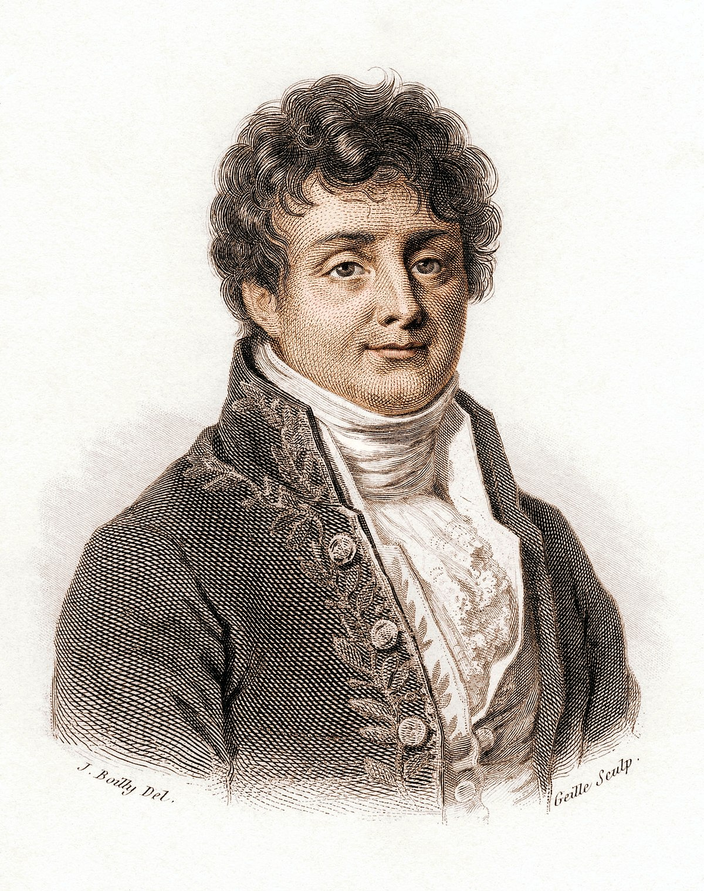
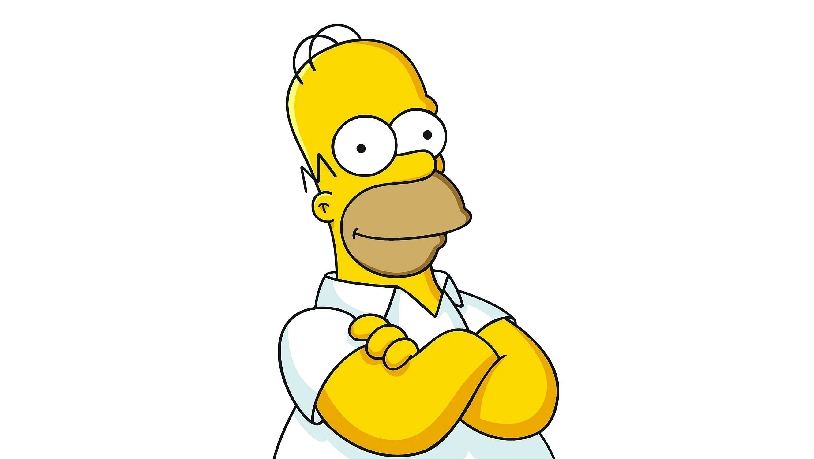

Center
Follow the end point?
Number of circle(s):
Pause/Resume
Try it now with your picture
or using example images


What is it?
This application draws anything using orbiting circles. Here is an example:
https://www.youtube.com/watch?v=QVuU2YCwHjw
How does it work?
You input an image.
The application performs edge detection and converts detected edges to lines.
A sub-pixel edge detection algorithm
[1]
is used in this step.
The application makes lines into an one-liner line.
The details of this step can be found in the source code.
The application draws the one-liner line using orbiting circles.
The details of this step are explained in
this video
[2]
.
Source code
https://github.com/phqb/circle_drawing/
References
[1]
Rafael Grompone von Gioi, and Gregory Randall
,
A Sub-Pixel Edge Detector: an Implementation of the Canny/Devernay Algorithm
,
Image Processing On Line
,
7
(2017), pp. 347–372.
https://doi.org/10.5201/ipol.2017.216
[2] But what is a Fourier series? From heat flow to drawing with circles | DE4
https://www.youtube.com/watch?v=r6sGWTCMz2k